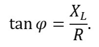
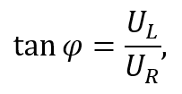
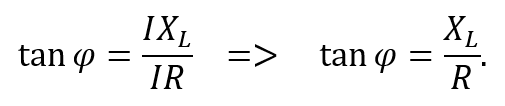
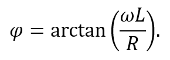

Поведінка RL-ланки в колі змінного струму

Рисунок 3.5.1
RL-ланка – це електричне коло, яке складається з опору R та індуктивності L (рис. 3.5.1). Поведінка такої ланки, як і RC-ланки, визначається взаємодією активної та реактивної складових опору.
У досліджуваній схемі вихід IN1 вимірювального приладу підключений до входу кола, після чого розташована котушка індуктивності L, далі – вихід IN2 вимірювального приладу, і завершальним елементом кола є резистор R.

Рисунок 3.5.2. Струм позначено жовтим кольором, напругу – блакитним.
Індуктивність створює реактивний (індуктивний) опір, унаслідок чого струм у колі відстає від напруги на деякий кут (рис. 3.5.2).
Тангенс кута зсуву фаз між напругою та струмом в RL-ланці дорівнює співвідношенню індуктивного опору кола до активного:

Даний вираз можна підтвердити за допомогою побудови векторної діаграми. Для цього, на координатній площині потрібно зобразити три вектори, які відповідатимуть струму та напругам на резисторі і котушці індуктивності відповідно (рис. 3.5.3).

Рисунок 3.5.3
Вздовж осі OX спрямовано вектор струму I→. Наступним зображується вектор напруги на резисторі UR→, так само спрямований вздовж вісі OX.
Як відомо, у колі з чисто індуктивним опором зсув фаз між струмом і напругою дорівнює куту π/2, причому коливання напруги випереджають коливання струму. Звідси випливає, що вектор напруги на котушці UL→ буде спрямований перпендикулярно вектору струму I→ вгору.

Рисунок 3.5.4
Для визначення суми векторів напруг доцільно використати метод паралелограма (рис. 3.5.4). Таким чином, отримано результуючий вектор U→. Цей вектор утворює з вектором струму I→ кут φ.
У прямокутному трикутнику, який утворюють вектори UR→, UL→ та U→, тангенс кута φ дорівнює відношенню:

де величини UL→ та UR→ є модулями відповідних векторів.
Якщо дещо спростити вираз і скоротити силу струму, формула набуває вигляду:

Отже, за допомогою методу векторних діаграм наочно підтверджується формула для визначення тангенса кута зсуву фаз між струмом і напругою в RL-колі.
З урахуванням визначення індуктивного опору та після певних перетворень формула для знаходження кута фазового зсуву має вигляд:

Таким чином, величина фазового зсуву в RL-ланці залежить від значень опору R, індуктивності L та частоти змінного струму. Зі збільшенням індуктивності та/або частоти індуктивний опір котушки збільшується, отже, збільшується і кут фазового зсуву. Зі збільшенням значення активного опору фазовий зсув зменшуватиметься. Це підтверджує, що фазові властивості RL-ланки визначаються співвідношенням активної та реактивної складових опору кола.